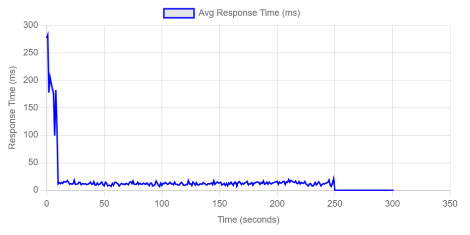
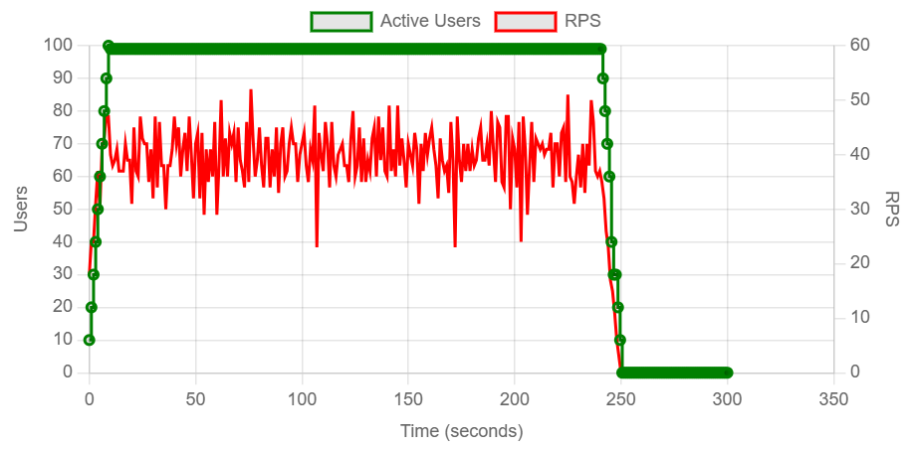
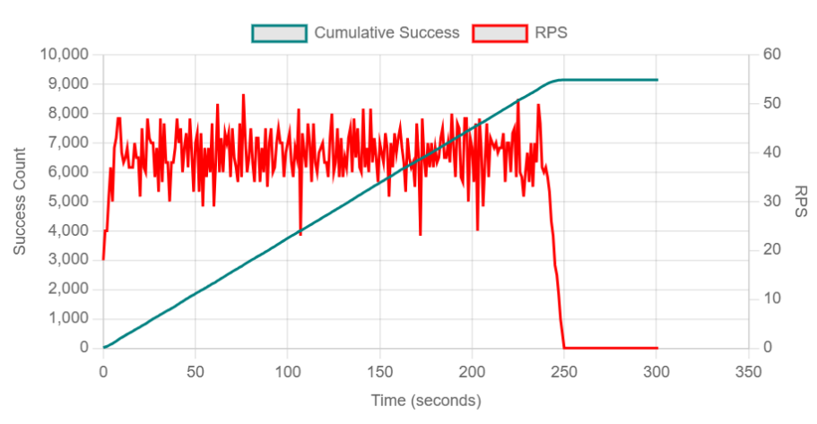
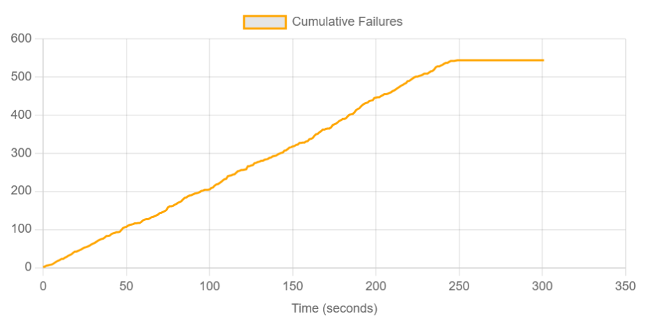

En este ejercicio implementamos una prueba de carga dinámica conocida como Ramp-up / Ramp-down.
A diferencia de las pruebas anteriores donde la carga era constante o lineal, aquí utilizamos una clase especializada (LoadTestShape) para orquestar fluctuaciones controladas de tráfico.
Este tipo de prueba es crucial para evaluar la elasticidad del sistema: su capacidad para escalar recursos cuando la demanda sube (Ramp-up) y, igualmente importante, liberar esos recursos y estabilizarse cuando la demanda baja (Ramp-down), verificando que no existan fugas de memoria o procesos "zombies".
Las pruebas se ejecutaron desde una máquina local que actuaba como nodo maestro de Locust, generando tráfico HTTP hacia los servicios desplegados. Los componentes del sistema (CMS y microservicios) estaban corriendo localmente a través de Docker Compose.
Las URLs base configuradas para cada servicio bajo prueba fueron las siguientes:
http://localhost:80http://localhost:5000http://localhost:5001http://localhost:5002http://localhost:5003
Se implementó un patrón de carga por etapas ("Step Load") definido programáticamente en la clase StagesShape.
El escenario simula picos de actividad seguidos de periodos de calma.
Archivo shape_ramp_test.py
El script utiliza la clase LoadTestShape de Locust para definir el control fino sobre el número de usuarios y la tasa de generación (spawn rate) en función del tiempo.
# shape_ramp_test.py
from locust import HttpUser, task, between, LoadTestShape
from common.users import DoctorUser, PatientUser, InstitutionUser
class StagesShape(LoadTestShape):
"""
Define una prueba de carga con etapas escalonadas (Step Load Pattern).
"""
stages = [
{"duration": 30, "users": 10, "spawn_rate": 5},
{"duration": 60, "users": 10, "spawn_rate": 5},
{"duration": 90, "users": 50, "spawn_rate": 5},
{"duration": 120, "users": 50, "spawn_rate": 5},
{"duration": 150, "users": 100, "spawn_rate": 5},
{"duration": 180, "users": 100, "spawn_rate": 5},
{"duration": 210, "users": 50, "spawn_rate": 5}, # Inicio Ramp-down
{"duration": 240, "users": 10, "spawn_rate": 5},
]
def tick(self):
run_time = self.get_run_time()
for stage in self.stages:
if run_time < stage["duration"]:
tick_data = (stage["users"], stage["spawn_rate"])
return tick_data
return None
La prueba tuvo una duración total aproximada de 4 minutos, cubriendo todas las fases de subida y bajada.
# Ejecución en terminal:
locust -f shape_ramp_test.py --headless --shape-class CustomShape -E smoke| Métrica | Valor |
|---|---|
| Total Peticiones | 9,690 |
| RPS Promedio | 11.2 |
| Tasa de Error | 0.48% (16 errores) |
| Tiempo Respuesta (p95) - API | 15 ms |
| Tiempo Respuesta (p95) - Login | 1200 ms |




/auth/login. Al correlacionar con la Fig 3 (Usuarios), estos errores ocurrieron durante las fases de Ramp-up agresivo. Esto sugiere que el servicio de autenticación tiene un límite de concurrencia para generar tokens (hashing costoso), pero una vez logueados, los usuarios operan sin fallos.
La prueba de Ramp-up/Ramp-down fue exitosa. PredictHealth demostró ser capaz de absorber picos de tráfico de hasta 100 usuarios concurrentes sin afectar la experiencia de navegación (lecturas). El sistema recupera su estado base instantáneamente tras la caída de la demanda.